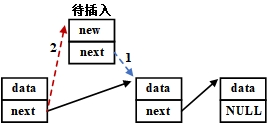
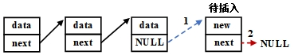
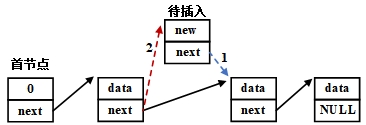
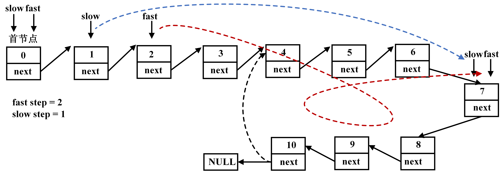
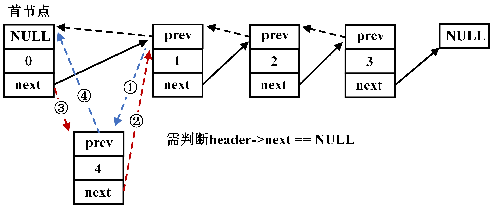
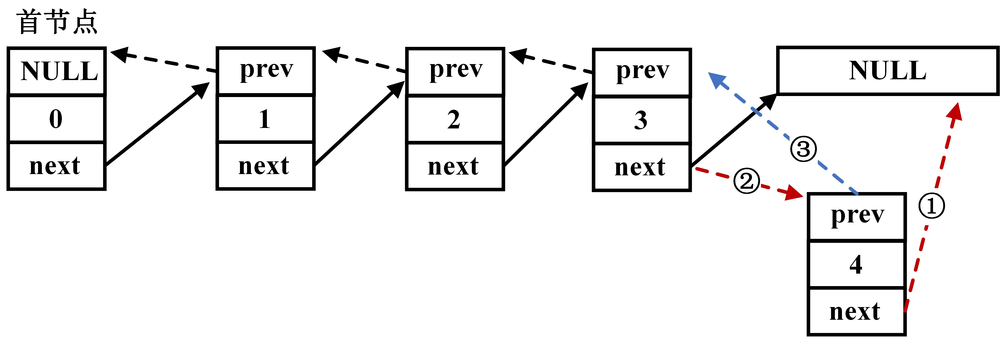
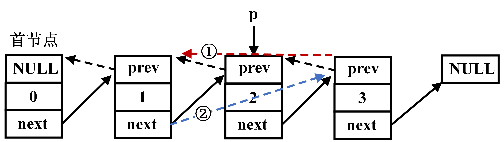

数据结构-02-线性表
本博文基于C语言数据结构定义时间、空间复杂度，补充等差数列、累加和数列、等比数列等数学基础。解释顺序表、链表的增删改查与效率提升思路。
代码:点击查阅
定义
由n(n>=0)个数据特性相同的元素构成的有限序列。
长度定义：线性表中元素个数定义为长度，n=0时称空表
非空线性表特性：
- 存在唯一一个“第一个”数据元素
- 存在唯一一个“最后一个”数据元素
- 除第一个元素外，每个元素只有一个前驱
- 除最后一个元素外，每个元素只有一个后继
顺序表
用一组连续的内存单元依次存储线性表各个元素，逻辑上相邻的元素在物理存储空间上也是连续的。
算法的目的也仅仅是针对某种数据结构高效的增删改查
存储结构
1 |
|
添加元素
可以将length作为数组索引。
1 | int appendElem(SeqList *L, ElemType e) |
遍历元素
1 | void listElem(SeqList *L) |
插入元素
顺序表插入数据需要移动目标位置处后的所有元素。
1 | int insertElem(SeqList *L,int pos, ElemType *e) |
删除元素
顺序表删除数据需要移动目标位置处后的所以元素，但是最后的元素不需清0。因为length-1之后，已经不会再访问该值。
1 | int deleteElem(SeqList *L,int pos, ElemType *e) |
查找元素
1 | int findElem(SeqList *L,ElemType e) |
动态内存
1 | typedef struct{ |
链表
存储结构
一组任意的存储单元存储线性表的数据元素，可以是连续的，也可以是不连续的。
相对于顺序表，链表村粗的存储单位未必连续。
每个数据元素除去本身的信息外，还需要存储一个指示后继信息。数据元素称为数据域，后继位置称为指针域，两部分信息共同称为节点。
n个节点组成的线性序列，称为链表。
1 | typedef int ElemType; |
单链表
初始化
单链表初始化，即初始化一个头节点。后续的节点则不断插入
1 | Node *initList() |
插入元素
头插法：每次把数据插入在头节点之后

头插链表该方法需要先将新节点链向下一个节点，再将头节点链向新节点。
1
2
3
4
5
6
7int insertHead(Node *L, ElemType e)
{
Node *p = (Node *)malloc(sizeof(Node));
p->data = e;
p->next = L->next;
L->next = p;
}尾插法
尾插法即插入在尾部，隐藏首先需要获取尾部节点。

尾插链表1
2
3
4
5
6
7
8
9
10
11
12
13
14
15
16
17
18
19Node *getTail(Node *L)
{
Node *p = L;
while(p->next != NULL)
{
p = p->next;
}
return p;
}
//在参数节点后插入新节点，并返回新的尾节点
Node *insertTail(Node *tail, ElemType e)
{
Node *p = (Node *)malloc(sizeof(Node));
p->data = e;
tail->next = p;
p->next = NULL;
return p;
}任意位置插入

任意位置插入1
2
3
4
5
6
7
8
9
10
11
12
13
14
15
16
17
18
19
20int insertNode(Node *L, int pos,ElemType e)
{
Node *p = L;
int i = 0;
for(i = 0; i < pos-1; i++)
{
p= p->next;
if(p == NULL) //链表长度不足
{
//此处可以做一些其他操作，比如直接插在尾部
return 0;
}
}
Node *new = (Node*)malloc(sizeof(Node));
new->data = e;
new->next = p->next;
p->next = new;
return 1;
}遍历
链表遍历不需要知道节点个数，而是以节点是否为NULL为条件。
1
2
3
4
5
6
7
8
9void listNode(Node *L)
{
Node *p = L->next;
while(p != NULL)
{
printf("%d\n",p->data);
p = p->next;
}
}
删除元素
对于链表，需要找到待删除的节点位置，随后释放内存空间，防止造成内存泄漏。
但在节点删除时，需要注意最后一个节点不能被删除，p->next为空代表链表结束。
删除节点
1 | int deleteNode(Node* L,int pos) |
如果需要删除全部链表，可从前向后删除。
1 | int deleteNodeList(Node *L) |
实际应用
例题1:查找节点
已知一个带有表头节点的单链表，节点结构为data + link。假设该链表只给出了头指针
list
。在不改变链表的前提下，请设计一个尽可能高效的算法，查找链表中倒数第 k
个位置上的结点（k 为正整数）。若查找成功，算法输出该节点的 data
域的值，并返回 1 ；否则，只返回 0 。要求：
- 描述算法的基本思想；
- 描述算法的详细实现步骤；
- 根据设计思想和实现步骤，采用程序设计语言描述算法（使用 C 、C++、或 Java语言实现），关键之处请给出简要注释
解题思路：使用双指针（快慢指针）。即快指针走k步之后，开始同步移动fast和slow指针，当fast指向NULL节点时，slow即为目标指针。
快慢指针查值
1 | int findNodeFS(Node *L, int k) |
例题2:合并链表
假定采用带头节点的单链表保存单词，当两个单词有相同的后缀时，则可共享相同的后缀存储空间，例如，“ending”和“being”的存储映像如下图所示。
合并尾部结点
设 str1 和 str2
分别指向两个单词所在单链表的头节点，链表结点结构为data+next请设计一个时间上尽可能高效的算法，找出由
str1 和 str2 所指向两个链表共同后缀的起始位置（如图字符 i 所在结点的位置
p）。要求：
- 描述算法的基本设计思想；
- 根据设计思想，采用 C 或 C++ 或 Java 语言描述，关键之处给出注释
- 说明你所设计算法的时间复杂度
解题思路：
已知尾部n个字符相等，则需要两个链表先对齐，即长链表后移gap个字节。随后，快慢指针同时移动，直到找到相同的data值。最后将短链表链向长链表的尾缀，并释放短链表后续的结点。
思路
- 寻找相同data时，需要记录上一个节点，以便链向新节点
1 | //例题2: 合并单词链表，例如being 和ending |
例题3:过滤同值
用单链表保存 n 个整数，结点的结构为 [data][link]，且|data| n(n 为正整数)。现要求设计一个时间复杂度尽可能高效的算法，对于链表中 data 的绝对值相等的节点，仅保留第一次出现的节点而删除其余绝对值相等的结点。例如，若给定单链表 head 如下：
操作事例
要求：
- 给出算法的基本设计思想。
- 使用 C 或 C++ 语言，给出单链表节点的数据类型定义。
- 根据设计思想，采用 C 或 C++ 语言描述算法，关键之处给出注释。
- 说明你所设计算法的时间复杂度和空间复杂度。
解题思路：空间换时间
- 已知链表节点内的data最大值小于链表长度n，可创建长度为n（或n+1）的空间作为判断数组，当某个值出现时索引值设为1。
- 当出现重复值时，将last_node->next指向current_node->next，以跳过重复节点。
- 刷新current_node节点
- 释放重复节点
操作事例
1 | //例题3：删除链表中数值绝对值相同的节点,已知链表长度n |
例题4:反转链表
假设有以链表结构为：头节点+其他n个节点，每个节点为data+next格式，设计算法将链表内节点顺序反转。
链表反转
解题思路：
- 使用三个指针指向顺序的三个数，当third指向NULL时，表明到达链表尾部
- 依次修改second节点的next指向，从指向下一个变为指向上一个
- 将源链表的头节点指向最后一个second节点
1 | //例题4：反转链表顺序 |
例题5:删除中点
假设有以链表结构为：头节点+其他n个节点，每个节点为data+next格式，设计算法将链表内中间节点删除。
解题思路：
- 使用快慢指针，slow每移动一个节点，fast移动两次
- 直到fast指向NULL或者fast->next指向NULL，则slow为待删除节点的前置节点
删除链表中间节点
1 | //例题5：删除链表中间节点 |
例题6:链表重排
设线性表L=(a1, a2, a3, … , an-2, an-1, an)采用带头节点的单链表保存，链表中的节点定义为data+next。
请设计一个空间复杂度为 O(1) 且时间上尽可能高效的算法，重新排列 L 中的各节点，得到线性表L’= (a1, an, a2, an-1, a3, an-2, …)。
解题思路：
- 找到中间节点，并断开为两个链表
- 将后半链表倒序重排
- 两个链表交叉相连

链表交叉重排
1 | //例题6:重排链表节点交叉相连 |
而无论链表长度为奇数还是偶数，前半段的链表一定最先到达尾部NULL节点，因此只需要将new_p的next节点连接至剩余的p即可。
偶数长度(情况1)与偶数长度(情况2)
单向循环链表
在单链表的基础上，尾节点的next不再指向NULL，而是指向链表中任意一个节点时，就构成了闭环。
适用于单链表的printfList函数就不再适用，因为判断条件不再是cuurent_node->next == NULL。同样的，删除链表的操作也需要预先将环断开。
循环链表
如图列出10个节点的链表，也许在第10个节点next指向NULL，构成单向链表。也许会按照虚线所示指向某个前方节点，构成循环链表。
因此，在确定单向链表疑似存在环之后：
- 确定是否存在环
- 确定环的长度
- 找到环的入口(起始节点)
针对以上三个目标引申出三个问题：
如何确定存在环路？–快慢指针
类比成小学数学的赛跑相遇问题，如果AB速度不同，则快着率先到达终点，否则一定会在途中某处相遇。因此问题就具现为快慢指针能否相遇

有环终会相遇如何确定环的长度？
当确定存在环之后，从相遇节点起始，直至再次遇到相同节点移动的节点数
环的入口？–x+y = y+x
当确定环的长度后，再次适用快慢指针思路，起始点先走环长度x，再同步走y个长度，一定会在入口相遇。
1 | //例题7:判断是否是循环单链表，并且找到循环入口 |
1 | // @param: src - 输入初始链表 |
如果需要释放链表，需要增加以下函数断开环：
1 | //释放循环链表 |
执行完此函数后，返回指针为最后一个节点，p->next为NULL。
双向链表
链式存储结构节点中只有一个指向后继的指针，查找节点的直接前驱，必须从表头出发，时间复杂度为O(n)。
因此为克服单向性的特点，提出双向链表，即prev和next。
双向链表
添加元素
头插法
相对于单链表，在处理时额外考虑链接前一个节点。
- 优先将下一节点的前置节点prev连接至新节点（也不是必须这么干，但逻辑关系要正确）
- 将新节点的next连接向头节点的下个节点
- 将头节点next连接至新节点
- 新节点prev链接至为头节点

双向链表头插法
1 | //以头插法插入节点,带值 |
尾插法
尾插法只需要将新节点的prev连接至原有的尾节点，其他与单链表一致。

双向链表尾插法
1 | //以尾插法插入节点,带值 |
任意节点
任意节点插入元素类似于头插法，只需要提前找到目标位置。
删除节点
预想删除节点，即：
找到目标位置的前一个节点
将待删除的节点的后继节点（非空）prev连接至前一节点
释放节点

双向链表删除节点
1 | //删除指定位置的节点 |
实际应用
例题1:已知头指针 h 指向一个带头节点的非空单循环链表，节点结构为data+next，其中p是尾指针，q是临时指针，要删除链表的第一个元素，正确的代码为：
- 单向链表
常规情况下，如下代码即可完成功能：
1 | q = h->next; |
单向链表/非单节点自循环链表
但显然，题干为循环链表，可能出现待删除节点自循环的情况：
1 | q = h->next; |
单节点自循环链表
总结
| 顺序表 | 链表 | |
|---|---|---|
| 存储空间 | 预先分配，可能闲置或溢出 | 动态分配 |
| 存储密度 | 1，无需额外存储表示节点逻辑关系 | 小于1 |
| 存取元素 | 随机存取，按位置时间复杂度为O(1) | 顺序存取，按位置时间复杂度为O(n) |
| 插入删除 | 平均移动表内一半元素，时间复杂度O(n) | 确定位置时，时间复杂度O(1) |
| 适用情况 | 表长变化不大，且能预估变化范围； 大多数进行随机访问，而非插入删除； |
长度变化大； 经常进行插入删除； |
例如常见的RTOS任务调度、TCP状态切换常用链表管理各个TCB控制块、消息缓存区，而具体的UART、CAN等消息接收区使用顺序表。
————————— End —————————
读书不觉已春深，一寸光阴一寸金。–《白鹿洞二首·其一》